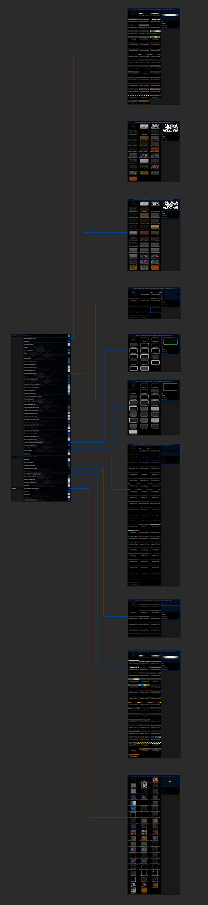

- Go toKODI TVand download the appropriate version for your hardware.
- Install Kodi.
- You may need to enable unknown sources in your Kodi settings.
- Go into your Kodi settings and open the file manager
- Select Add source and click on None.
- Type in the path https://dwthings.github.io/ and select OK.
- Highlight the box underneath and type in a name like “dwthings” for this media source.
- Click OK.
- Go back to your main menu and select Addons on the left side.
- Open the addon browser by clicking on the little box symbol at the top left.
- Select Install from ZIP file.
- Open the source dwthings and select the file repository.dwstuff-x.x.zip.
- Wait until the notification appears that the repository was installed successfully.
- In your addon browser select Install from repository.
- Select the installed DWStuff Repository.
- Open the category Program addons.
- Select DWBig Wizard and click on Install on the bottom right.
- Wait until the notification appears that DWBig Wizard was installed successfully.
- Click Continue.
- Select Build Menu.
- Select Build.
- There are currently two to choose from.
- omega_sandbox - Uses all free addons and a VPN is not required.
- omega_lite - A lite version of the omega build.
- Choose Install if you just installed Kodi or use Fresh Install if you want to replace an existing build.
- The build will now download and install.
- Click force close Kodi.
- Open Kodi and leave for a couple of minutes so any updates can be completed.
Any Image
Any Color
Infinite Combinations
Infinite Possibilities
SANDBOX

repository.dwstuff-1.5.zip